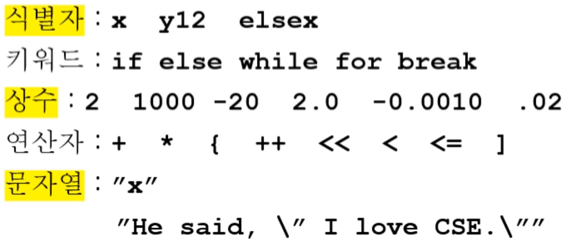
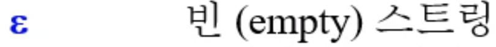
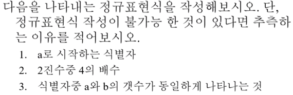
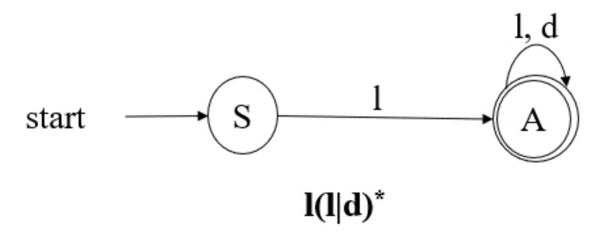
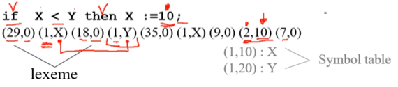
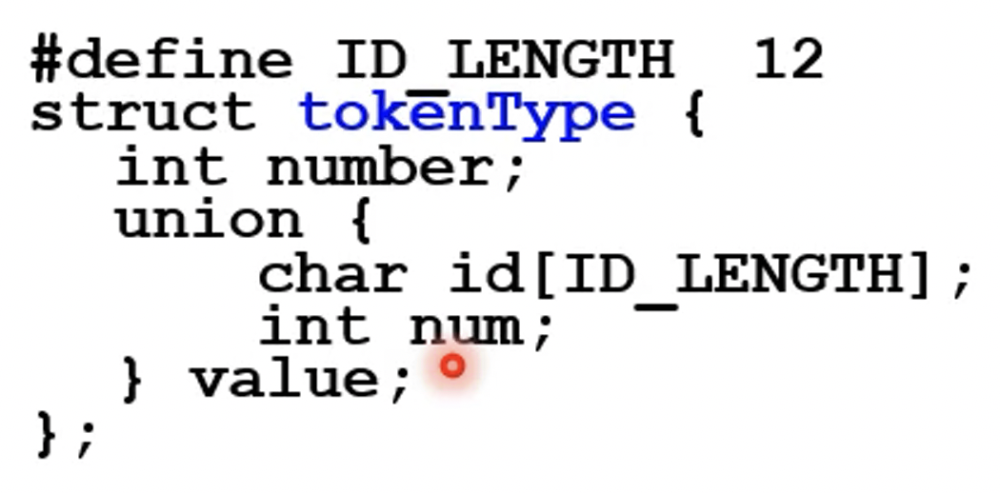
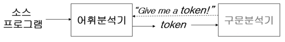

충남대학교 컴퓨터공학과 조은선 교수님의 "컴파일러 개론" 강의를 필기한 내용입니다.
다소 잘못된 내용과 구어적 표현 이 포함되어 있을 수 있습니다.
컴파일러 전반부의 과정
- 전처리기 : # include, # define, # ifdef등의 명령을 처리해서 전처리가 완료된 소스코드로 변환함
- Lexical analysis
- Syntax analysis
- Semantic analysis
Lexical analysis
- 전처리가 완료된 소스코드를 하나의 문자열로 보고 문법적으로 의미있는 최소단위인 토큰 으로 쪼개는 과정
- 토큰은 다음과 같이 5개 정도의 종류가 있다

- 키워드나 연산자는 사용자가 마음대로 적는게 아니기 때문에 exact match가 가능하다 - if는 바로 분기문이라는 의미의 토큰으로 분류가 가능
- 하지만 식별자와 상수, 문자열의 경우에는 사용자가 지정하는 것이기 때문에 exact match를 할 수 없고 조금 더 처리를 해줘야 한다
- 어디까지가 하나의 토큰인지, 이놈이 어떤 역할을 하는놈인지 바로 알기 힘든 경우가 많다더라
토큰을 기술하는 방법
- 토큰을 기술하는 방법중 하나로 정규표현식을 활용한다

- 이것만 안까먹으면 너가 알던 정규표현식이랑 똑같더라
- 문제

^a- 100$
- 해결못함
토큰을 인식하는 방법
- 그냥 정규표현식 라이브러리 사용하면 된다
- 근데 좀 더 원론적인 부분으로 들어와서 우리가 그 라이브러리를 만드는 입장일때 정규표현식으로 토큰을 인식하는 방법으로 FSA 를 사용한다
- 프언개에서 배운거다 - Finite State Automata 즉, 유한상태 오토마타를 의미하는 것

- 다시 복습해보자면
- 시작상태와 끝 상태가 있고
- 시작상태와 끝 상태 사이에는 유한한 상태들이 존재하며
- 특정 조건에 따라 상태가 전이되는 오토마타인 것
- 모든 정규식은 FSA로 표현될 수 있고 모든 FSA는 정규식으로 표현될 수 있댄다
- 토큰을 인식하는 절차는 기술된 정규표현식을 FSA로 변환하고 FSA대로 문자열의 문자 하나하나를 처리하게 된다
- 근데 FSA로 변환하는 과정에 NFA와 DFA를 거치게 된다
- NFA와 DFA는 모두 FSA의 한 종류인데, FSA는 한 상태에서 뻗어나가는 edge(화살표)에 붙은 레이블(문자)에 대한 제약조건이 없다
- 즉, 하나의 상태에서 같은 레이블이 붙은 화살표가 여러개 있어도 된다는 소리이다
- 이때, 이것에 대해 제약조건을 준게 DFA이다
- 즉, DFA(Deterministic Finite Automata) 라는 것은 한 상태에서 뻗어나가는 edge의 레이블은 모두 달라야된다(Deterministic 해야 된다)는 것을 만족하는 FSA를 말한다
- 반대로 DFA에 포함되지 않는 FSA를 Non-DFA라고 해서 NFA 라고 한다
- 따라서 토큰 인식은 다음과 같은 순서를 따르게 된다
- 정규식을 NFA로 변환하고(변환 알고리즘이 알려져 있다)
- NFA를 DFA로 변환하고(이것도 알려져 있다)
- DFA를 돌려서 토큰을 인식하는 그리고 여러 정규표현식에 매칭되어 구분될 수 있는 토큰의 경우에는 Greedy하게 처리 = 제일 길이가 긴놈으로 처리하게 된다
토큰인식한 토큰을 처리하는 방법
- Lexeme이라는 자료형을 사용 - (토큰번호, 토큰값)의 형태로 처리하게 된다

- 위의 예제를 보면 if는 29번, 변수들은 1번, <는 18번 등으로 처리된 것을 알 수 있고
- 키워드나 연산자의 경우에는 값으로 0이 들어가지만 변수나 상수는 값으로 그 키워드의 변수 / 상수가 들어가는 것을 알 수 있다
- 변수(상수)들에 대해 같은 번호를 쓰고 값을 다르게 하는 이유는 키워드나 연산자의 경우에는 exact match이지만 변수나 상수의 경우에는 사용자가 지정하는 값이기 때문이라고 생각할 수 있다
- 그리고 회색글씨처럼 변수번호를 지정해서 값으로 넣어주고 symbol table을 만들어주는 것도 가능한 방법이다

- C언어의 구조체로 표현하면 대략 위처럼 된다
- union은 타입스크립트에서의 union type과 비슷하다고 생각하면 된다
- 문자 배열 또는 정수가 저장될 수 있으며 이 문자 배열과 정수가 따로따로 메모리를 할당받는게 아니라 하나의 메모리 공간에 들어가게 되는 것
- int number에 토큰 번호가 들어가게 되며
- char id[] 에는 변수(식별자)의 경우 이름이 들어가고
- int num에는 상수의 경우 그 상수의 값이 들어가게 된다
구문문석기

- 어휘분석기는 scanner()라는 함수를 제공하고 구분분석기가 이 scanner()함수를 호출함으로 다음 토큰을 받아오는 형식으로 구현된다